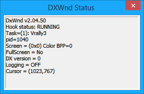

This command shows a status window with the following information about DxWnd and the hooked program, updated once per second:

|
DxWnd version |
In the picture, the current one: 2.04.50. |
|
Hook status |
Either IDLE, READY or RUNNING (see tray icons). |
When running, shows the following additional information:
|
Task |
The task name (see the configuration panel). |
|
PID |
The process ID number. |
|
Screen |
(width x height) colordepth, as seen by the task. |
|
FullScreen |
Yes/No depending whether the task has set the cooperative level to EXCLUSIVE or not. |
|
DX Version |
Version of the DirectDraw / Direcr3D interface currently in use (namely, the one used to create the primary surface). |
|
Logging |
The logging flag (either ON or OFF). |
|
Cursor |
The X,Y cursor coordinates as intercepted and fixed by DxWnd. |